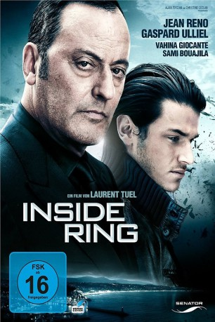

#8784 Inside Ring
Alternativ: Ultimate Heist (Englischer Titel) Ein enger Kreis
 
 IMDB-Wertung: 5.5 / 10
IMDB-Wertung: 5.5 / 10  Metascore: 0
Metascore: 0 
Anton ist der einzige Sohn des armenischen Mafia-Paten Milo Malakian. Der Malakian-Clan hat an der Côte d'Azur ein unantastbares Imperium errichtet. Antons Weg ist damit vorbestimmt: Er soll die "Geschäfte" der Familie übernehmen. Doch Anton will aussteigen, denn die Liebe zu einer Frau lässt ihn von einem anderen Leben träumen - einem bürgerlichen Leben außerhalb des Clans. Dem Vater die Stirn zu bieten, ist jedoch ein lebensgefährliches Unterfangen, denn aus dem "inneren Ring" der Familie gibt es kein Entkommen
Jahr: 2009
Dauer: 95 Minuten
FSK: 16
Land: Frankreich Studio: ARDTonspuren:
Untertitel: Deutsch,
Auflösung: 1080p (1920x816) Größe: 5324 MB
Genre: Thriller, Drama, Krimi
Regisseur: Laurent Tuel
Drehbuch: Laurent Tuel
Soundtrack: Alain Kremski
Darsteller:
 Jean Reno als Milo Malakian
Jean Reno als Milo Malakian- Gaspard Ulliel als Anton Malakian
- Vahina Giocante als Elodie
 Sami Bouajila als L'inspecteur Saunier
Sami Bouajila als L'inspecteur Saunier Philippe Leroy als Halami
Philippe Leroy als Halami Gisèle Casadesus als Mme Malakian
Gisèle Casadesus als Mme Malakian- Patrick Cauderlier als Le gardien (uncredited)
- Isaac Sharry als Rudy
- Alberto Gimignani als Emilio
- Eric Challier als Missak
- Julian Negulesco als Daniel
- Franco Trevisi als Frank
- Albert Goldberg als Bedik
- Mirza Halilovic als Levin
- Vladimir Milivojevic als Aram
- Nicolas Bridet als Mirelli
- Tony Gaultier als Coutard
- Jean-Paul Zehnacker als Cazes
- Jeff Hatchikian als Le pope
- Yan Brian als Le bourgeois
- Jean-Michel Chapelain als Lieutenant GIPN
- Anton Yakovlev als Conducteur Ferrari
- Michel Ferracci als Patron du night-club
- Fabrice Bagni als Responsable sécurité night-club
- Kevork Alexanian als Le diacre
- Ruben Bakar als Ruben
- Alain Zef als Rafi
- Clément Brun als Le Fils de la Villa Marine (uncredited)
- Jean-Yves Freyburger als Garçon d'étage (uncredited)
- Lisa Ulliel als La Fille (uncredited)
Datei: X:\2009(G-M)\Inside Ring (2009, FSK16, 1920x816).mkv seit 30.04.2018
Festplatte: HD 2009(G-Z)-2010(A-F)
 Es gibt insgesamt 82 Filme in der Gruppe '2009(G-M)'
Es gibt insgesamt 82 Filme in der Gruppe '2009(G-M)'